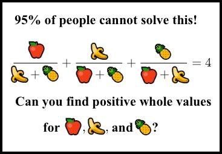
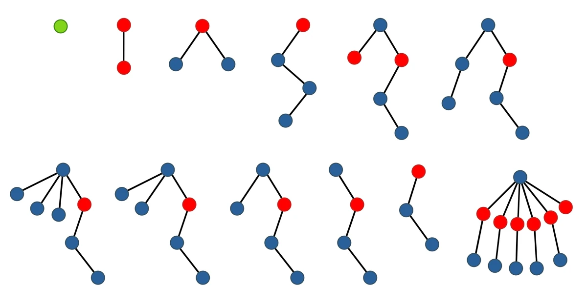

Cursed Math Problems
Created: November 24, 2024. 6:40pm
Updated: November 25, 2024. 11:00am
ALGEBRA / ANALYSIS
- Let $S$ be the set of all positive integers that do not contain the string 314159 in its decimal representation. Does $\displaystyle\sum_{n\in S}\frac1n$ converge?
- Find all functions $f:\mathbb R\to\mathbb R$ atisfying $f(x+y)=f(x)+f(y)$ for all $x,y\in\mathbb R$.
Answer
$f(x)=cx$ is not the only solution to this functional equation. See Cauchy's functional equation. - Does there exist a function $f:\mathbb R\to\mathbb R$ such that
- $f$ is continuous, but differentiable nowhere?
- $f$ is differentiable, but $f'$ is not continuous?
- $f$ is continuous at a single point, but discontinuous everywhere else?
- $f$ is continuous only at irrational numbers, and discontinuous at everywhere else?
- $f$ is continuous only at rational numbers, and discontinuous at everywhere else?
Answer
- Yes. One example is the Weierstrass function
- Yes. For example, define $f(x)=\begin{cases}x^2\sin(1/x) & (x\ne0) \\ 0 & (x=0)\end{cases}$. It's derivative $f'$ is called a Darboux function.
- Yes. For example, consider $x$ times the Dirichet function: $f(x)=\begin{cases}x & (x\in\mathbb Q)\\0 & (x\not\in\mathbb Q)\end{cases}$
- Yes. One example is Thomae's function: $f(x)=\begin{cases}\frac1q & \text{if }x=\frac pq\text{ for some coprime integers }p,q\\ 0 & \text{ if }x\text{ is irrational}\end{cases}$
- No. See proof here.
- It can be shown that
\begin{align*}
&\int^\infty_0\frac{\sin(x)}x\,dx=\frac\pi2\\
&\int^\infty_0\frac{\sin(x)}x\cdot\frac{\sin(x/3)}{x/3}\,dx=\frac\pi2\\
&\int^\infty_0\frac{\sin(x)}x\cdot\frac{\sin(x/3)}{x/3}\cdot\frac{\sin(x/5)}{x/5}\,dx=\frac\pi2\\
&\int^\infty_0\frac{\sin(x)}x\cdot\frac{\sin(x/3)}{x/3}\cdot\frac{\sin(x/5)}{x/5}\cdot\frac{\sin(x/7)}{x/7}\,dx=\frac\pi2\\
&\int^\infty_0\frac{\sin(x)}x\cdot\frac{\sin(x/3)}{x/3}\cdot\frac{\sin(x/5)}{x/5}\cdot\frac{\sin(x/7)}{x/7}\cdot\frac{\sin(x/9)}{x/9}\,dx=\frac\pi2\\
&\int^\infty_0\frac{\sin(x)}x\cdot\frac{\sin(x/3)}{x/3}\cdot\frac{\sin(x/5)}{x/5}\cdot\frac{\sin(x/7)}{x/7}\cdot\frac{\sin(x/9)}{x/9}\cdot\frac{\sin(x/11)}{x/11}\,dx=\frac\pi2\\
&\int^\infty_0\frac{\sin(x)}x\cdot\frac{\sin(x/3)}{x/3}\cdot\frac{\sin(x/5)}{x/5}\cdot\frac{\sin(x/7)}{x/7}\cdot\frac{\sin(x/9)}{x/9}\cdot\frac{\sin(x/11)}{x/11}\frac{\sin(x/13)}{x/13}\,dx=\frac\pi2\\
\end{align*}
What is the value of $\displaystyle\int^\infty_0\frac{\sin(x)}x\cdot\frac{\sin(x/3)}{x/3}\cdot\frac{\sin(x/5)}{x/5}\cdots\frac{\sin(x/15)}{x/15}\,dx$ ?
Answer
The answer is $\dfrac{467807924713440738696537864469}{935615849440640907310521750000}\pi$.
This is called a Borwein integral.
3Blue1Brown has a great video explaining this weird phenomenon.
GEOMETRY
- What is the expected distance between two randomly chosen points inside a unit square?
Answer
$\dfrac{2+\sqrt2+5\ln(1+\sqrt2)}{15}$
This problem is called Mean line segment length. See here for a solution. - Is it possible to express $\cos(2\pi/11)$ using radicals?
Answer
Despite there not being a general quintic formula, the answer is Yes.
According to this StackExchange post, the answer, in its full glory, is \begin{align*} \cos\left(\frac{2\pi}{11}\right)=&\frac14\left(\sqrt5-1-i\sqrt{10+2\sqrt5}\right)\cdot\sqrt[5]{-\frac{11}4\left(89-25\sqrt5-5i\sqrt{410+178\sqrt5}\right)}+\\ &\frac14\left(\sqrt5-1+i\sqrt{10+2\sqrt5}\right)\cdot\sqrt[5]{-\frac{11}4\left(89+25\sqrt5+5i\sqrt{410-178\sqrt5}\right)}+\\ &\frac14\left(\sqrt5-1-i\sqrt{10+2\sqrt5}\right)\cdot\sqrt[5]{-\frac{11}4\left(89+25\sqrt5-5i\sqrt{410-178\sqrt5}\right)}+\\ &\frac14\left(\sqrt5-1+i\sqrt{10+2\sqrt5}\right)\cdot\sqrt[5]{-\frac{11}4\left(89-25\sqrt5+5i\sqrt{410+178\sqrt5}\right)} \end{align*} In fact, it's always possible to write any $\cos(p\pi/q)$ using radicals, but the solution won't be very pretty. The proof involves Galois theory (I think).
NUMBER THEORY
- Find all integer solutions to $x^2=2y^4-1$
Answer
For $x,y\ge0$, the only solutions are $(1,1)$ and $(239,13)$. This equation is called Ljunggren's equation. - Find all integer solutions to $y^2=x^3+24$
Answer
For $y\ge0$, the only solutions are $(-2,4)$, $(1,5)$, $(10,32)$, $(8158,736844)$. This equation is a Mordell curve. - Let $O(n)$ be the number of integers $\le n$ with an odd number of prime factors (with multiplicity) and $E(n)$ be the number of integers $\le n$ with an even number of prime factors.
The first few $n$ such that $O(n)=E(n)$ are $n=0,2,4,6,10,16,26,40,96,586$. Are there any others?Answer
Yes. The next smallest is $n=906150256$. This is also known as Pólya Conjecture.
A list of all such $n$ found so far can be found on OEIS. - Can you find positive integer solutions to
$$\frac a{b+c}+\frac b{c+a}+\frac c{a+b}=4\,?$$
 Answer
The smallest solution for $(a,b,c)$ is 80 digits long: \begin{align*} a &= 154476802108746166441951315019919837485664325669565431700026634898253202035277999\\ b &= 36875131794129999827197811565225474825492979968971970996283137471637224634055579\\ c &= 4373612677928697257861252602371390152816537558161613618621437993378423467772036 \end{align*} See this Quora post or this AoPS blog post to see how these could be computed. - Let $\sigma(n)=\sum_{d\mid n}d$ be the sum of divisors function, and $H_n=1+\frac12+\frac13+\cdots+\frac1n$ be the $n^{th}$ harmonic number. Is it true that $$\sigma(n)\le H_n+e^{H_n}\log(H_n)$$ for all integers $n\ge1$?
- Is the following inequality true for all integers $n\ge3$? $$|\log\mathrm{lcm}(1,2,\ldots,n)-n|<\sqrt n\log^2(n)$$
- Does there exist a multivariate polynomial $P(x,y_1,y_2,\ldots,y_n)$ with integer coefficients with the following property:
For every nonnegative integer $x$, $x$ is a prime number if and only if there exist nonnegative integers $y_1,\ldots,y_n$ such that $P(x,y_1,\ldots,y_n)=0$.Answer
Yes. According to this source, one such polynomial is \begin{align*} &(wz+h+j-q)^2+((gk+2g+k+1)(h+j)+h-z)^2+(16(k+1)^3(k+2)(n+1)^2+1-f^2)^2+(2n+p+q+z-e)^2\\ &+(e^3(e+2)(a+1)^2+1-o^2)^2+((a^2-1)y^2+1-x^2)^2+(16r^2y^4(a^2-1)+1-u^2)^2+(n+l+v-y)^2+((a^2-1)l^2+1-m^2)^2\\ &+(ai+k+1-l-i)^2+(((a+u^2(u^2-a))^2-1)(n+4dy)^2+1-(x+cu)^2)^2+(p+l(a-n-1)+b(2an+2a-n^2-2n-2)-m)^2\\ &+(q+y(a-p-1)+s(2ap+2a-p^2-2p-2)-x)^2+(z+pl(a-p)+t(2ap-p^2-1)-m)^2 \end{align*} Then $k+2$ is prime so long as there are values of the other variables for which the polynomial equal zero.
More generally, the MRDP theorem states that if $S$ is any recursively enumerable set of natural numbers (any set which you can compute with some algorithm), then there exists a polynomial $P(x,y_1,\ldots,y_n)$ such that $x\in S$ if and only if there exist nonnegative integer values for the other variables $y_1,\ldots,y_n$ which make the polynomial 0.
COMBINATORICS
- Define sequence $a(n)$ as follows:
- $a(1)=1$
- $a(n)$ is the largest integer $k$ such that the word $a(1)a(2)a(3)\cdots a(n-1)$ can be written as $xy^k$ for some words $x$ and $y$.
The first time number 4 appears in this sequence is at the 220th term.
Does the number 5 ever appear in this sequence? If yes, when does it appear for the first time?Answer
The earliest index at which number 5 appears in the sequence is approximately $$3.271904422329\times 10^{125857689874791897769333}$$ In fact, every positive integer eventually appears in the sequence, but the first occurrence of any natural $n$ is at approximately $2^{2^{3^{4^{5^{.^{.^{.^{n-1}}}}}}}}$.
This is Gijswijt's sequence, and is an example of a sequence that grows super-logarithmically.
- Denote the "hereditary base-$n$ notation" of an integer $m$ as writing it in base-$n$, then its exponents in base-$n$, and its exponents' exponents in base-$n$, etc. For example, the hereditary base-3 notation of 100 is
$$100=3^{3^1+1}+2\cdot3^2+1$$
Let $m$ be a positive integer. Perform the following step repeatedly until the result is 0, starting with Step 1:
"In the $n^{th}$ step, express the current value using base-$(n+1)$ notation. Then replace each occurrence of $(n+1)$ with $(n+2)$, and finally subtract 1 from the resulting new number."
If we start with $m=8$, the sequence goes \begin{align*}a_1 &= 2^{2^1+1} &&= 8\\ a_2 &= 2\cdot3^{3^1}+2\cdot3^2+2\cdot3+2 &&= 80\\ a_3 &= 2\cdot4^{4^1}+2\cdot4^2+2\cdot4+1 &&= 553\\ a_4 &= 2\cdot5^{5^1}+2\cdot5^2+2\cdot5 &&= 6310\\ a_5 &= 2\cdot6^{6^1}+2\cdot6^2+6+5 &&= 93395\\ a_6 &= 2\cdot7^{7^1}+2\cdot7^2+7+4 &&= 1647195\\ &\vdots \end{align*} Does this sequence eventually reach 0? If yes, after how many steps?Answer
Yes. Even though it seems to grow without bound, it will eventually halt after finitely many steps. In fact, this is always true regardless of the starting point $m$. This is Goodstein's theorem, and is an example of a sequence that grows absurdly fast.
If we start with $m=8$, then the sequence will eventually reach 0 after more than $$A^3(3,3)=A(A(61),A(61))$$ steps, where $A(m,n)$ is the Ackermann function. - In this problem, we'll refer to "trees" as any rooted tree where each node has a color.
We say that a tree T is "contained" in tree T' if T can be formed from T' by deleting edges, vertices, and by contracting edges.
We say that a (finite) sequence of trees is "good" if each node of every tree in the sequence is colored in one of $c$ colors, the $i^{th}$ tree in the sequence contains at most $i$ nodes, and a tree cannot contain a tree that appears earlier in the sequence.
If only one color can be used for the nodes, the max length of a good sequence is 1.
If only two colors can be used for the nodes, the max length of a good sequence is 3.
What is the max length of a good sequence, if three colors can be used for the nodes?
 Answer
The answer is TREE(3), which is absurdly huge! It's extremely bigger than Graham's number, which itself is already unfathomably large.
See Numberphile's video on TREE(3), or read more about it on the Googology wiki.
PROBABILITY
-
- You are playing a game: You flip a coin repeatedly until it turns up tails for the first time. At that point, you win $2^n$ dollars, where $n$ is the number of times you flipped the coin. What is your expected winnings?
- The same game, but if $n$ is odd, you win $2^n$ dollars. Otherwise if $n$ is even, you lose $2^n$ dollars. What is your expected winnings?
- The same game, but if $n$ is odd, you win $3^n$ dollars. Otherwise if $n$ is even, you lose $3^n$ dollars. What is your expected winnings?
- The same game, but if $n$ is odd, you win $2^n/n$ dollars. Otherwise if $n$ is even, you lose $2^n/n$ dollars. What is your expected winnings?
Answer
Not entirely sure, but here are my answers:
a. $+\infty$
b. Does not converge. The expected sum seems to oscillate between 1, 0, 1, 0, 1, 0, ...
c. Does not converge. The expected sum oscillates wildly.
d. $\ln2$. This is a bit suspicious since the expected sum is conditionally convergent.
This is also known as the St. Petersburg paradox. It shows how absurd expected values can be. -
- Mr. Jones has two children; at least one is a boy. What is the probability he has two boys?
- Mr. Jones has two children; at least one is a boy who was born on Tuesday. What is the probability he has two boys?
- Mr. Jones has two children. When you walk to his house and knock on the door, one of these two children (with equal probability) will open the door. You knock on the door and a boy opens the door. What is the probability he has two boys?
Answer
a. 1/3
b. 13/27
c. 1/2
This is also known as the Boy or girl paradox, which shows how counterintuitive conditional probabilities can be.
SET THEORY
- Let $X$ and $Y$ be sets. If $X$ has smaller cardinality than $Y$, does it imply $X$ has fewer subsets than $Y$?
Answer
The answer is independent of ZFC. See here for some other reasonable-sounding statements that are actually independent of ZFC. - Define a subset $A$ of $\mathbb R^2$ to be a "cloud around $p$" if every line through $p$ has a finite intersection with $A$. Can three clouds cover the entire plane?
Answer
It is equivalent to the Continuum Hypothesis, which is undecidable in ZFC. See here for some other reasonable-sounding statements that are actually independent of ZFC. - Can every infinite set be partitioned into two disjoint infinite sets?
Answer
The answer is Yes, but it relies on Axiom of Choice. In ZF (without Choice), there exist models where this statement does not hold. Infinite sets which cannot be partitioned into two disjoint infinite sets are called amorphous sets.
LOGIC / GAME THEORY
- On an island, there are 100 people who are imprisoned by a mad dictator. All 100 of them have green eyes, and they are also perfect logicians. There is no escape from the island, except for one rule: Every night, any prisoner can approach the guards at night and ask to leave. If they have green eyes, they'll be released. If not, they get executed. No one on the island ever knows their own eye color. Each person knows every other person's eye color, there are no reflective surfaces, and they cannot communicate with each other.
At some point, an outsider comes to the island, calls together all the people on the island, and makes the following public announcement: "At least one of you has green eyes". What happens next?Answer
On the 100th night after the announcement, all the people will leave the island.
This is known as the green-eyed logic puzzle. To this day I still haven't found a satisfactory explanation to the solution of this riddle. It has to do with common knowledge somehow. - Consider infinitely many people each wearing a hat, which is either red or blue. Each person can see the hat color of everyone except themselves. Simultaneously each person guesses the color of their hat. Show that they can form a strategy such that at most finitely many people guess their color incorrectly.
- There is a house with 100 rooms, and each room contains countably many boxes indexed with the natural numbers. Each box contains a random real number, which is the same over all the rooms (that is, box n contains the same real number in every room).
100 set theorists play a game. Each person will go into a unique room and open as many boxes as they like (perhaps countably many) as long as they leave at least one box in their room unopened. Then, each of them need to pick an unopened box in their room, and guess what real number is inside of it.
In order to win, 99 of them need to guess correctly.
The mathematicians can discuss a strategy beforehand, but after they go into their respective rooms, no more communication is allowed. What is a 100% winning strategy for this seemingly impossible task?
COMPUTER SCIENCE
- Does the following six-state Turing machine halt? If yes, after how many steps?
State Symbol 0 1 A 1 R B 0 L D B 1 R C 0 R F C 1 L C 1 L A D 0 L E 1 R HALT E 1 L F 0 R B F 0 R C 0 R E Answer
Yes. It halts after this many steps: $$\frac{-11+3^{\frac{13+3^{\frac{23+3^{\frac{7+3^{\frac{21+3^{\frac{7+3^{\frac{23+3^{\frac{7+3^{\frac{23+3^{\frac{7+3^{\frac{21+3^{\frac{7+3^{\frac{23+3^{\frac{7+3^{\frac{21+3^{\frac{7+3^{4}}8}}8}}8}}8}}8}}8}}8}}8}}8}}8}}8}}8}}8}}8}}8}}2>10\uparrow\uparrow15$$ This number can't even be stored on a comupter!
This six-state Turing machine was found by Pavel Kropitz, and it is also the current world record for $BB(6)$, where $BB$ is the Busy beaver function.